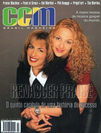
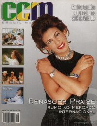

CMnexus
:
Contemporary Christian culture, music, and media.
Magazines
Profiles
Dove Awards
cmnexus.org
CM
nexus
→
Profiles
→
G
→
Karina Gouêva
Karina Gouêva
< -- Prev
ious
Next-- >
1
2
Writing credits listing
Sep 1998
in
CCM Brasil
1.1
"Un fenômeno chamado Catedral"
Catedral
Graham Kendrick
,
Jorge Camargo
-
Sem Barreias
Priscilla Angel
-
Tudo de Mim
Adhemar de Campos
-
Deus Eterno
Cristina Mel
-
Presente de Deus
Igreja Bíblica da Paz
-
Cantai
Banda Reluz
-
Não dá prá Esquecer
RM6
-
Proteção
Renasoul
-
Direção Certa
Ludmila Ferber
-
O Verdadeiro Amor
"Os Beatles brasileiros da música gospel"
Resgate
"Canta Rio Invade Reduto Carnavalesco"
Canta Rio;
Primeira Essência
and others
"A Revolucão de Paulinho Makuko"
Paulinho Makuko
"CD de Aline Barros traz faixa multimídia"
Aline Barros
Nov 1998
in
CCM Brasil
1.2
Júlio Cézar
,
Júlio Cézar Motta
-
Duo Project
Praise Machine
-
O Toque
Silvio Depieri
-
Sons & Tons
Brother Simion
-
Asas
Silvério Peres
-
10 Anos de Adoração
Cristina Mel
-
Com Muito Amor
Soraya Moraes
-
Pensando em Deus
Val Martins
-
Com Palavras e Com Obras
Ronaldo Bezerra
-
Rei do Universo
Brother Simion
"Em Direção Certa"
Renasoul
"Vozes Celestiais"
Kades Singers
"O Rap Rock de Amaury Fontenele"
Amaury Fontenele
"Som Alegre"
Rhemajireh
"Em Grande Estilo: Festa marca lançamento do CCM Brazil magazine"

Dec 1998
in
CCM Brasil
1.3
"Um dos maiores groupos de louvor do País lança seu quinto trabalho"
Renascer Praise
Cia Alternative
-
O Presente
,
O Presente Kids
Paulinho Makuko
-
Limites Invisíveis
Código C
-
Ze!
Rayssa e Ravel
-
Outra Vez
Jeanne Mascarenhas
-
Te Levarei
Jaqueline Castorino
-
Filho Pródigo
Catedral
-
A Revolução
"Um ano de Cia"
"Kadoshi comemora 15 anos"
Silas Furtado
"Album Novo, Visual Novo"
Projet'Art
Val Martins
"O Reggae Contemporâneo do Praise Machine"
Praise Machine

Dec 1999
in
CCM Brasil
2.8
"Alçando Vôos Mais Altos"
Renascer Praise
various artists -
Canta Rio 99 - Ao Vivo
Indies:
Juízo Final
"Resgatando Sua Historia"
Rhimena Abecia
"Praise Machine Faz Turnê Pela Bolívia e Brasil"
Praise Machine
2000
in
CCM Brasil
3.9
"Entrada no Novo Milênio a Milhão"
Brother Simion
Benner Jacks
-
Rei dos Reis
"O que diz o coração de Fernanda Brum"
Fernanda Brum
< -- Prev
ious
Next-- >
1
2
CMnexus
(noun)
The magazine index
of modern music
and Christianity
© 2011 CMnexus. Last updated May 2025.
Contact:
Rants and other correspondence to:
editor -AT- cmnexus
-DØT- org
About